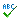

This demo demonstrates how to use
AtD
to check spelling and grammar in a textarea.
The purpoce of a spell checker is to check the text four spelling and typeing errors. The checker finds errors througout the text. When the spell checker finds an questionable word, it highlights it and suggests the mpst likely variants too replace the questionable word. You can select the variant and replace the wrrd or leave the word unanged.

Check Spelling